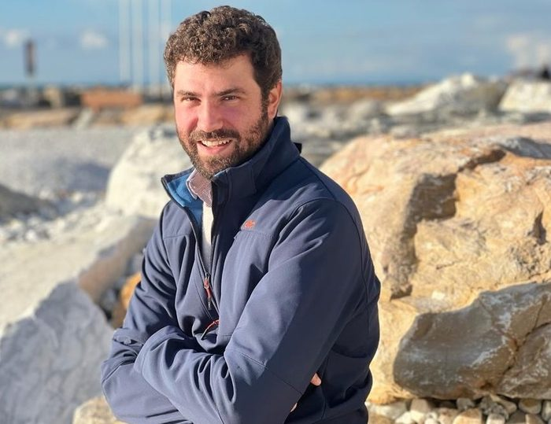

Andrea Lazzarini
Professore Associato di Letteratura Italiana
Università degli Studi di Genova, DIRAAS
andrea.lazzarini@unige.it · Università di Genova (DIRAAS), via Balbi 2, 16126 Genova

Profilo /
La mia ricerca si concentra sulla letteratura italiana tra Cinque e Ottocento, con particolare attenzione ai rapporti tra cultura letteraria, saperi scientifici e dibattito critico-teorico. Un tratto costante del mio lavoro è l’attenzione alla dimensione filologica, linguistica ed ecdotica della ricerca italianistica.
Mi sono occupato in particolare di Alessandro Tassoni e della storia della poetica tra petrarchismo cinquecentesco ed età illuministica, temi al centro delle monografie «Pazza cosa sarebbe la poesia». Alessandro Tassoni lettore del Trecento fra Barocco ed Età muratoriana (2020) e I Fiscali del Diavolo. Muratori, Fontanini e Castelvetro (2021). È in preparazione l’edizione commentata della Secchia rapita (con Maria Cristina Cabani e Ottavio Besomi).
Negli ultimi anni ho dedicato diversi studi all’opera di Federico De Roberto e ai suoi rapporti con la cultura positivistica europea, e al rapporto tra letteratura e scienza nel secondo Ottocento. In questo ambito ho anche ideato e coordinato i progetti PRIN 2022 Literature and Sciences in the ‘Nuova Italia’ (1848–1915): Psychology, Anthropology, Medicine e 2022 PNRR Theorizing the Passions: Paolo Mantegazza, his cultural network and 19th-century Italian Literature.
Principali linee di ricerca:
- Alessandro Tassoni
- Forme liriche e narrative nel Barocco, tra eroicomico e romanzo.
- Federico De Roberto
- Rapporti tra letteratura e scienza nell’Ottocento.
- Letteratura dialettale tra Cinque e Seicento.
- Filologia d’autore, ecdotica e digital humanities
My research focuses on Italian literature from the sixteenth to the nineteenth century, with particular attention to the relationship between literary culture, scientific knowledge, and critical-theoretical debate. A consistent feature of my work is its emphasis on the philological, linguistic, and ecdotic dimension of Italian literary studies.
I have worked extensively on Alessandro Tassoni and on the history of poetics between sixteenth-century Petrarchism and the Enlightenment – themes at the core of the monographs «Pazza cosa sarebbe la poesia». Alessandro Tassoni lettore del Trecento fra Barocco ed Età muratoriana (2020) and I Fiscali del Diavolo. Muratori, Fontanini e Castelvetro (2021). A critical edition of the Secchia rapita (with Maria Cristina Cabani and Ottavio Besomi) is forthcoming.
In recent years I have devoted several studies to the work of Federico De Roberto and to his engagement with European positivist culture, and more broadly to the relationship between literature and science in the second half of the nineteenth century. In this area I designed and coordinate the PRIN 2022 project Literature and Sciences in the ‘Nuova Italia’ (1848–1915): Psychology, Anthropology, Medicine and the PRIN PNRR 2022 project Theorizing the Passions: Paolo Mantegazza, his cultural network and 19th-century Italian Literature.
Main research interests:
- Alessandro Tassoni
- Lyric and narrative literary forms in the Baroque, between mock-heroic and romance
- Federico De Roberto
- Relationships between literature and science in the 19th-century
- Southern Italian dialect literature between the 16th and 17th century (Cortese, Basile)
- Authorial philology, ecdotics, and digital humanities
Posizione
- 1/10/2024–
-
Professore Associato di Letteratura Italiana (ITAL-01/A)
Università degli Studi di Genova, Dipartimento di italianistica, romanistica, antichistica, arti e spettacolo (DIRAAS) - 2022–
-
Membro del collegio docenti
Dottorato in Letterature e Culture Classiche e Moderne – Università degli Studi di Genova
Progetti
finanziati in seguito a peer evaluation
- 2023–2026
-
PRIN 2022
Literature and Sciences in the ‘Nuova Italia’ (1848–1915): Psychology, Anthropology, Medicine. (Principal Investigator) - 2023–2026
-
PRIN PNRR
Theorizing the Passions: Paolo Mantegazza, his cultural network and 19th-century Italian Literature (Substitute Principal Investigator and Head of Local Unit) - 2025–2026
-
Progetto di ricerca PNRR “Dicolab. Cultura al
digitale”
Documenti risorgimentali dell’Istituto Mazziniano – Museo del Risorgimento. Monitoraggio e valorizzazione di fondi digitalizzati
Referente universitario per il Dipartimento DIRAAS, Università di Genova
Organizzazione di convegni
e conferenze
- 11–13/09/2025
-
Membro del comitato organizzativo, Università di Genova
Egemonie e margini nella letteratura italiana. XXVIII Congresso dell’Associazione degli Italianisti (ADI) - 13–14/02/2025
-
Organizzazione giornate di studi, Università di Genova
Patologie della scrittura. Letterati e artisti nella critica positiva
Nell’ambito dei progetti PRIN 2022 Literature and Sciences in the ‘Nuova Italia’ (1848–1915): Psychology, Anthropology, Medicine e PRIN PNRR Theorizing the Passions: Paolo Mantegazza, his cultural network and 19th-century Italian Literature - 23–24/05/2024
-
Organizzazione convegno, Università Federico II di Napoli
Lo sperimentalismo narrativo di Federico De Roberto. Ricerche e prospettive - 20/05/2022
-
Organizzazione convegno, Università di Genova
Dal Barocco a Manzoni. Percorsi della prosa tra Sei e Ottocento - 14/12/2022
-
Organizzazione convegno, Università di Genova
I Viceré di Federico De Roberto. Letteratura, politica, scienza nella crisi del positivismo europeo
Divulgazione
- 11/05/2025
-
Partecipazione su invito, Palazzo Blu, Pisa
«La letteratura non conosce mostri: La città dei vivi di Nicola Lagioia», con letture di Elisa Proietti
URL: https://www.youtube.com/watch?v=qabyUHtWLxY - 15/11/2018
-
Partecipazione su invito, «Carte rivelatrici 2.0», Biblioteca Estense Universitaria, Modena
«Navigare Muratori: testi, significati e parole-chiave di un intellettuale della corte estense» - 14/09/2019
-
Partecipazione su invito, Festival della Filosofia, Modena
«Conversazione interattiva sulla “Pubblica felicità” di Muratori» (insieme ad Andrea Zanni) - 09/09/2022
-
Partecipazione su invito, Festival della Comunicazione, Camogli
Letteratura e scienze intorno alla ‘Nuova Italia’. Psicologia, antropologia, medicina
Pubblicazioni
Monografie e edizioni
critiche
- Alessandro Tassoni, La secchia rapita, edizione commentata (con Maria Cristina Cabani e Ottavio Besomi). Di prossima uscita nella collana della Fondazione Bembo (2027).
- I fiscali del Diavolo. Muratori, Fontanini e CastelvetroPisa, ETS, 2021
- «Pazza cosa sarebbe la poesia». Alessandro Tassoni lettore del Trecento fra Barocco ed Età MuratorianaModena, Franco Cosimo Panini, 2020
- Giulio Cesare Cortese, La Rosa. Favolaa cura di Andrea Lazzarini, Lucca, Pacini Fazzi, 2018
Curatele
- (Insieme a Duccio Tongiorgi) – Sezione di articoli su De Roberto in «Rassegna Europea della Letteratura Italiana» (3, 2023)
- Federico Contini, Andrea Lazzarini (a cura di), Francesco Bracciolini. Gli «Ozi» e la cortePisa, Pisa University Press, 2020
Articoli in rivista
- Ritratti di un falsario. Finzioni e fantasmi bibliografici nel libro di lettere di Tommaso Stigliani«Studi secenteschi», LXVI, 2025, pp. 113-147
- Non è poi così grave. Sul titolo dei Viceré di Federico De Roberto«Esperienze letterarie», L, 2025, fasc. 1, pp. 99-108, DOI: 10.19272/202507901006
- Varietà pinocchiesca«Oblio», XV, 2025, fasc. 51, pp. 180-192, URL: https://www.progettoblio.com/wp-content/uploads/2025/06/16.-Lazzarini-Varieta-pinocchiesca.pdf
- Vite «curiose, ben intrecciate e improvisamente disciolte». Sulla «Settimana Santa ben avventurosamente sfuggita» di Giovanni Ambrosio Marini«Generi», II, 2024, pp. 147-162
- Un ritrovato esemplare della «Schiavitudine mondana ridotta in libertà» di Giovanni Ambrosio Marini«Studi secenteschi», LXV, 2024, pp. 366-371
- «Tutto si paga». I «Viceré» e la degenerazione«Rassegna Europea della Letteratura Italiana», LXIII–LXIV, 2024, pp. 91-121
- Andrea Lazzarini, Duccio Tongiorgi, Letture dei «Vicer黫Rassegna Europea della Letteratura Italiana», 2023, pp. 11-15
- Paradigma testuale, paradigma indiziario. Aspetti del lascito della critica stilistica sulla teoria di Francesco Orlando«L’Ulisse», XXV, 2022, pp. 37-48, URL: https://rivistaulisse.wordpress.com/2022/12/29/lulisse-25-stili-della-poesia-contemporanea/
- «L’amore c’è soltanto nel titolo». Gli Amori di Federico De Roberto tra Bourget e Lombroso«Oblio», XII, 2022, pp. 135-157, URL: https://www.progettoblio.com/wp-content/uploads/2022/06/18-Lazzarini-%C2%BDLamore-c%C2%BF-soltanto-nel-titolo-.pdf
- Gli autografi delle lettere di Alessandro Tassoni ad Albertino Barisoni. Osservazioni filologiche preliminari«Nuova Rivista di Letteratura Italiana», XXIII, 2020, pp. 127-148, DOI: 10.4454/nrli.v23i2.366
- Tra Aristotele e Alberti. Poesia e arti figurative nella «Poetica» di Lodovico Castelvetro«Giornale Storico della Letteratura Italiana», CXCVII, 2020, pp. 101-120
- Laura, Francesco e Tassoni. Una critica secentesca agli amori di Petrarca«Griseldaonline», XVIII, 2019, fasc. 2, pp. 45-62, URL: https://doi.org/10.6092/issn.1721-4777/9865
- «Il fiore della granadiglia». Una raccolta poetica del primo Seicento e il suo contesto europeo«Annali della Scuola Normale Superiore di Pisa», IX, 2017, pp. 101-125, 303-308
- Ancora sui rapporti tra letteratura dialettale riflessa e toscano: una dedicatoria di G. C. Cortese a G. B. Basile«Studi secenteschi», LVII, 2016, pp. 159-183
- Due esemplari ignoti delle Opere Burlesche di Giulio Cesare Cortese«Studi secenteschi», LXVII, 2016, pp. 324-334
- Poesia eroicomica e satira poetica: Tassoni, Bracciolini, Marino«Nuova Rivista di Letteratura Italiana», XVII, 2014, pp. 107-147
- Il «Potta di Modena». Precisazioni storico-linguistiche attorno a un personaggio della Secchia rapita di Alessandro Tassoni«Nuova Rivista di Letteratura Italiana», XVI, 2013, pp. 61-93
- Materiali per «Elegia di Pico Farnese». Fonti, modelli, incroci«Italianistica», XLII, 2013, pp. 11-33
- Una polemica intorno al «Pastor fido in lingua napolitana» di Domenico Basile«Studi secenteschi», LIV, 2013, pp. 187-203
- Ritratti, cortine, «celesti arcani». Note su arte, sacralità e profano nell’«Adone» di G. B. Marino«L’Ellisse», VI, 2011, pp. 105-128
- Una Testimonianza di Tommaso Stigliani. Palazzi e libri di disegno in una dichiarazione di poetica mariniana«Italianistica», XL, 2011, pp. 73-85
Parti di monografia
- Trame, caso e provvidenza. Ancora sulla storia redazionale delle «Gare de’ disperati» di G. A. Mariniin Regni di carta. Modelli politici e rappresentazione del potere nel romanzo ligure e veneto del Seicento, a cura di Marianna Liguori, Alessandro Metlica, Roma, Edizioni di Storia e Letteratura, 2026, pp. 135-156
- L’impossibilità dell’illusione. Intorno a Spasimoin Lo sperimentalismo narrativo di Federico De Roberto, a cura di Giovanni Maffei, Concetta Maria Pagliuca, Napoli, FedOAPress, 2025, pp. 73-97, DOI: 10.6093/978-88-6887-367-7
- Tommaso Stigliani critico del romanzo barocco. Una sonettessa sul «Cretideo»in Dal Barocco a Manzoni. Percorsi della narrativa tra Sei e Ottocento, a cura di Luca Beltrami, Matteo Navone, Giordano Rodda, Pisa, ETS, 2024, pp. 231-242
- «Questo umano affetto e desiderio di viver dopo la morte». Intermittenze della volontà d’archivio in Alessandro Tassoniin Volontà d’archivio. L’autore, le carte, l’opera, a cura di Paola Italia, Monica Zanardo, Roma, Viella, 2023, pp. 317-331
- Figure «armoniche» e «d’ingegno». Intorno a una questione di poetica secentescain La musica della poesia. Il suono e il senso nella lirica europea (1100-1600), a cura di Francesco Carapezza, Pisa, Pacini, 2023, pp. 209-230
- Basile petrarchista. Conservatorismo letterario e sperimentazione linguistica nella Napoli «Oziosa»in Barocco meridiano. Studi per Gino Rizzo, a cura di Pasquale Guaragnella et al., Lecce, Argo, 2023, pp. 141-165
- Appunti su astronomia e astrologia nella produzione burlesca di Francesco Braccioliniin Letteratura e Scienze. Atti delle sessioni parallele del XXIII Congresso dell’ADI (Associazione degli Italianisti), Pisa, 12-14 settembre 2019, a cura di Alberto Casadei et al., Roma, Adi editore, 2021, URL: https://www.italianisti.it/pubblicazioni/atti-di-congresso/letteratura-e-scienze
- Un postillato giovanile di Alessandro Tassoni: l’«Ercolano» di Varchiin Alessandro Tassoni e il poema eroicomico. Atti del convegno di Padova, 6-7 giugno 2019, a cura di Stefano Fortin, Elisabetta Selmi, Francesco Roncen, Lecce, Argo, 2021, pp. 207-235
- Deconstructing Petrarch. Alessandro Tassoni’s Considerazioni sopra le Rime del Petrarca and its textual historyin Interpreting and Judging Petrarch’s Canzoniere in Early Modern Italy (16th-18th Centuries), a cura di Maiko Favaro, Oxford, Legenda, 2021, pp. 117-135
- Cortese dopo Cortese. Bartolomeo Zito commentatore della «Vaiasseide»in La letteratura dialettale a Napoli. Testi, problemi, prospettive, a cura di Salvatore Iacolare, Giuseppe Andrea Liberti, Firenze, Cesati, 2020, pp. 17-39
- La «maraviglia» e il «riso». Reazioni primo-seicentesche alle metafore «sregolate»in La misura del disordine. Miraggi e disincanti nella poesia barocca europea, a cura di Carmen Gallo, Pisa, Pacini, 2020, pp. 131-158
- Un caso di esegesi burlesca nella Roma dei Barberini. Il Comento sopra i versi di Cecco Antonioin Francesco Bracciolini. Gli «Ozi» e la corte, a cura di Federico Contini, Andrea Lazzarini, Pisa, Pisa University Press, 2020, pp. 107-175
- Appunti sulla ricezione italiana di Ausiàs March. Prima e dopo le Considerazioni di Alessandro Tassoniin Ausiàs March e il Canone europeo, a cura di Benedetta Aldinucci, Cèlia Nadal Pasqual, Alessandria, Edizioni dell’Orso, 2018, pp. 217-249
- Attorno alle «Considerazioni sopra le Rime del Petrarca»in Alessandro Tassoni. Poeta, erudito, diplomatico nell’Europa dell’Età Moderna, a cura di Maria Cristina Cabani, Duccio Tongiorgi, Modena, Franco Cosimo Panini, 2017, pp. 121-138
- Canto VIIin Lettura della Secchia rapita, a cura di Davide Conrieri, Pasquale Guaragnella, Lecce, Argo, 2016, pp. 89-105
- 4. Le fonti su Massimo Stanzione, intorno all’Accademia degli Oziosi e 5. Il Ms. XIV E 10in Floriana Conte, Tra Napoli e Milano. Viaggi di artisti nell’Italia del Seicento. 1. Da Tanzio da Varallo a Massimo Stanzione, Firenze, Edifir, 2012, pp. 306-398
- Floriana Conte, Andrea Lazzarini, Proposte per Massimo Stanzione (e una premessa su Salvator Rosa): 1. La cronologia, le iconografie, i committenti; 2. Le fontiin La pittura italiana del Seicento all’Ermitage. Atti del convegno internazionale (Roma, Palazzo Barberini, 19-20 ottobre 2011), a cura di Francesca Cappelletti, Irina Artemieva, Firenze, EDIFIR, 2012, pp. 185-226 [Lazzarini: 207-215, note 57-97]
Voci di enciclopedia
- Tassoni, Alessandroin Dizionario Biografico degli Italiani, Roma, Istituto della Enciclopedia Italiana, 2019, vol. XCV, pp. 150-156, URL: https://www.treccani.it/enciclopedia/alessandro-tassoni_%28Dizionario-Biografico%29/
- Stigliani, Tommasoin Dizionario Biografico degli Italiani, Roma, Istituto della Enciclopedia Italiana, 2019, vol. XCIV, URL: https://www.treccani.it/enciclopedia/bio-stigliani-tommaso-tomaso_%28Dizionario-Biografico%29/